PANEL DISCUSSIONS
TRANSLATING GOVERNANCE TO MANDATE (1000-1200)
SKOCH Challenger Lifetime Achievement Award 2018
Nitin Gadkari, Hon’ble Minister of Road Transport and Highways & Shipping |
| 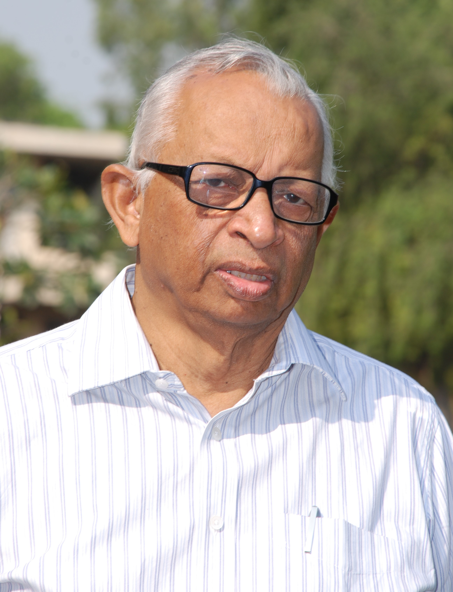 | N C Saxena, Former Member, National Advisory Council & Distinguished Fellow, SKOCH Development FoundationN C Saxena, Former Member, national advisory council is a distinguished fellow, Skoch Development Foundation, New Delhi. A Rockefeller Foundation Fellow, he obtained his Ph.D. from the University of Oxford, UK He specialises in the rural development, natural resource management, rural livelihoods, poverty alleviation, watershed and drinking water, governance, decentralization and people’s participation. A member of Indian Administrative Services (IAS), Dr. Saxena recently retired as Secretary, Planning Commission, Government of India. He was earlier, Secretary, Rural Development and Director at Lal Bahadur Shastri National Academy of Administration, Mussoorie. Author of repute, he has contributed to several research papers to various international journals and has written several widely acclaimed books. View Bio |
| 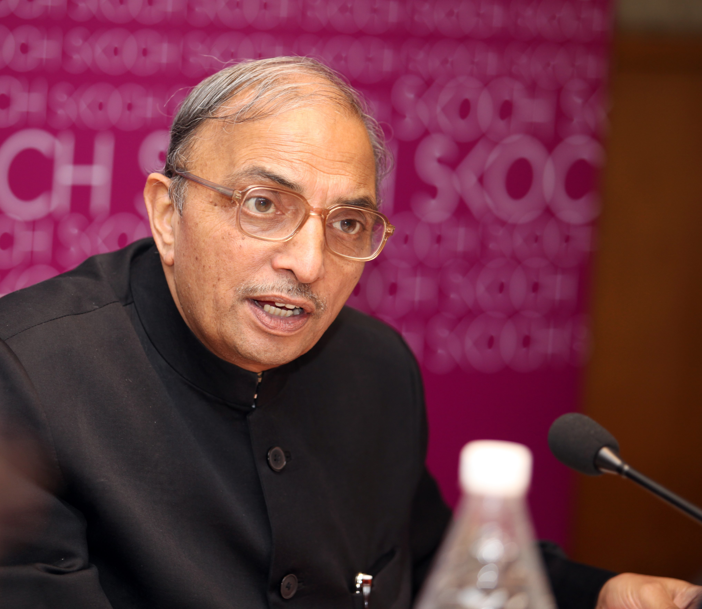 | Deepak B Phatak, Professor Emeritus, IIT-B, Mumbai & Director, SKOCH Development FoundationDeepak B Phatak is an Indian computer scientist and academic, and a recipient of the Padma Shri Award for his contribution in science and technology in 2013. He is known for his notable work for upgrading Aakash, advertised by its manufacturer as the 'world's cheapest tablet'. In 2009, he was ranked one of the 50 most powerful people in India. Phatak completed secondary school at Dayanand Arya Vidyalaya, graduated third in his class with a degree in electrical engineering from Shri Govindram Seksaria Institute of Technology and Science (SGSITS) Indore, completed his master of engineering (specialising in instrumentation, control and computers), and received his PhD in computer science from Indian Institute of Technology Bombay. View Bio |
| 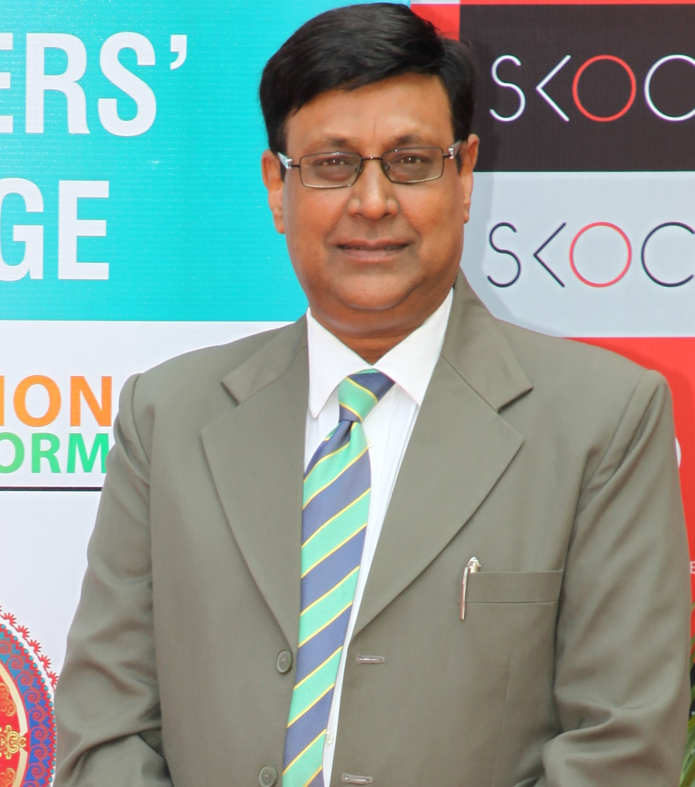 | Nirmal Bansal, Senior Fellow, SKOCH Development FoundationMr Nirmal Bansal is Senior Fellow with the SKOCH Development Foundation. He is a seasoned Banker with an overall banking and financial services experience of over 33 years. He is an expert in Banking, Financial Sector, Financial Inclusion and Public Affairs. He has worked with Corporation Bank for 11 years and HDFC Bank as Executive Vice President and Business Head for 14 years. He was last with FINO (Now FINO PAYMENT BANK) as Director-Business and Government Initiatives. View Bio |
| 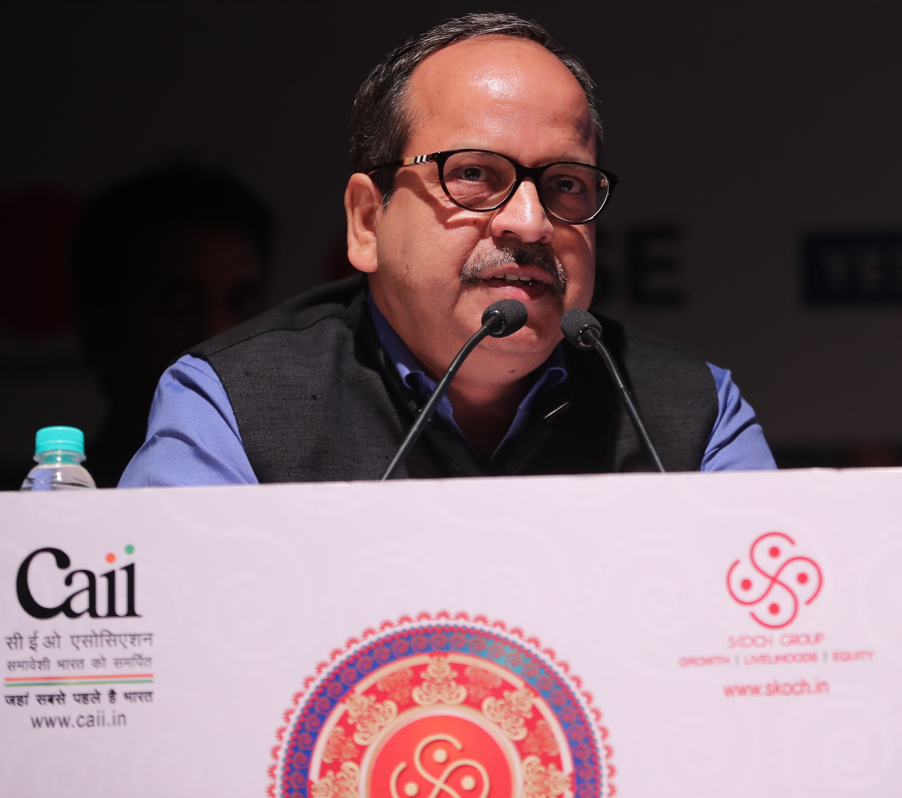 | V N Alok, Indian Institute of Public AdministrationProf V N Alok is a renowned Public Finance and Fiscal Decentralisation Expert. He serves as Associate Professor in Public Finance at the Indian Institute of Public Administration (IIPA). He is also a member of the Delhi State Finance Commission. Dr Alok has written extensively on India’s fiscal federal architecture and worked with international organisations such as the World Bank and the Forum of Federations. Dr VN Alok computes the annual Fiscal Devolution Index sponsored by the Ministry of Panchayati Raj, Government of India. View Bio |
INVESTING IN NEW INDIA - FINDING THE MONEY (1230-1400)
Discussion Framework:
New India will be built on infrastructure. Infrastructure needs investments. This is currently in short supply. Legacy sub-optimal policy decisions, poorly drafted PPP contracts and unwillingness of the state government agencies to pay up, even though they are contractually bound to bring to the table the ‘public’ part of responsibilities in PPP projects has created an impression of investments being high risk and a potential danger of infrastructure sector turning into another non performing asset. The socio-economic impact of infrastructure companies and concessionaires exiting the projects and leaving the government to deal with the debt and inoperative infrastructure can be devastating. With the banking sector already in a serious NPA crisis and markets still sceptical on infrastructure, there are very few funding options left. In all earnestness, the Modi Government has taken steps to de-risk future investments in infrastructure and made the proposition attractive. In light of the above this panel examines the following:
- What can be done to attract investments and where could these investments come from?
- Are there any successes to take note of and learn from?
- The necessity of institutions like LIC or pension funds investing in and injecting cash in critical infrastructure companies, the social relevance of such a decision and medium to long-term economic payback?
- How to dramatically speed up the arbitration and award process and bring a sense of urgency in all stakeholders
to ease cash flows in existing infrastructure projects?
Power Panel Discussion Moderated by
| 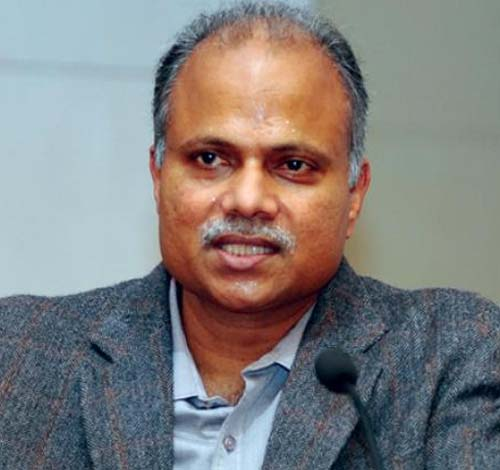 | T K Arun, Editor - Opinion, The Economic TimesT K Arun is Editor, Opinion of The Economic Times, India's leading business paper with a circulation of 800,000 every day. He writes a fortnightly column on the paper's edit page, Cursor. He has been the paper's Resident Editor at Delhi, headed the economy bureau and looked after the editorial page in another stint in the past. He has been with the paper since 1994, except for a two-and-a-half year stint with the dot-com world during 1999-2001, when he edited an online portal called Narad online. He has worked as a technical advisor at the Kerala State Planning Board, before beginning his career in journalism in 1992 at the Observer of Business and Politics, New Delhi. View Bio... |
 |
Rathin Roy, Part-time Member, Economic Advisory Council to the Prime Minister of India & Director, NIPFPRathin Roy took charge as Director NIPFP in May 2013. Prior to joining NIPFP, he has been the Director of Asia Pacific Regional Centre, UNDP, Bangkok, and the Director, International Policy Centre for Inclusive Growth (IPC-IG), UNDP, Brazil. He has also served as the Public Resource Management Advisor, and the Acting Cluster Leader, Inclusive Development, in the Poverty Practice, Bureau for Development Policy (BDP), UNDP. View Bio... |
| 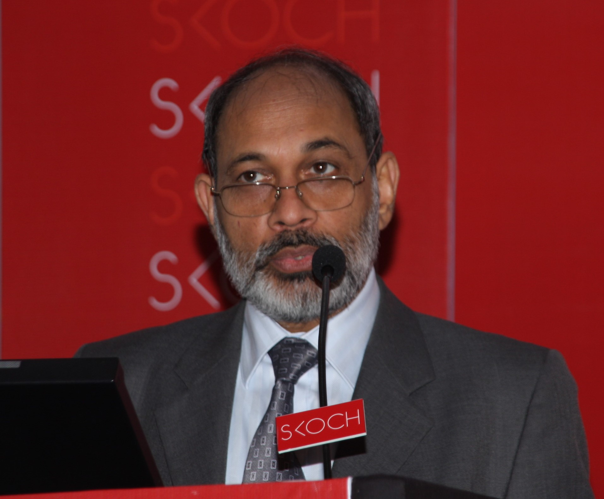 | M Ramachandran, Distinguished Fellow, SKOCH Development FoundationDr M RAMACHANDRAN, Distinguished Fellow SKOCH Development Foundation, is a retired 1972 Batch officer of the Indian Administrative service. He formerly served as Secretary, Ministry of Urban Development, Govt. Of India - where he was spearheading the implementation of the JNNURM. In Uttarakhand where he served as Chief Secretary, he was identified as “The Infrastructure Man”. National Officer selected to be on deputation to UNDP India during 1986-1992. Dr Ramachandran holds a PhD from University of Glasgow, UK. View Bio... |
| 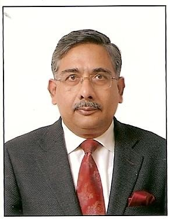 | Saurabh Chandra, Chairman, Multi Commodity ExchangeMr. Saurabh Chandra, a Graduate in Electrical Engineering from the Indian Institute of Technology, Kanpur (First with Distinction), retired from the post of Secretary, Government of India, Ministry of Petroleum and Natural Gas. Prior to that, he was Secretary in the Department of Industrial Policy and Promotion, Ministry of Commerce and Industry, Government of India. He is currently a Public Interest Director and Chairman of the Board of Directors of Multi Commodity Exchange of India Limited and an Independent Director on the Boards of IDBI Trusteeship Services (ITSL), SBI Pension Funds Pvt. Ltd., Usha Breco Limited and Vacmet India Limited, Member of the Technical Advisory Board of Intech Organics Ltd. and Member of the Advisory Board of CL Infotech Pvt. Ltd. View Bio... |
| 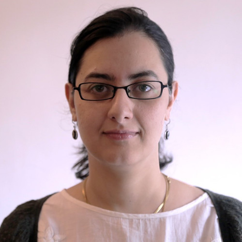 | Puja Mehra, JournalistPuja Mehra is a Delhi-based journalist. She won the Ramnath Goenka Excellence in Journalism Award in 2008 and 2009 for her stories on the impact of the Lehman Brothers' collapse-triggered financial meltdown and the subsequent global economic downturn on the Indian economy. She was formerly a Senior Deputy Editor at The Hindu. View Bio... |
| 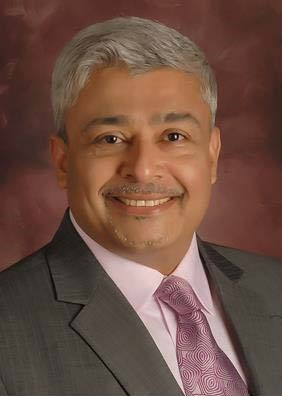 | Vikas Verma, SVP - Account Management, South Asia, MastercardVikas Varma is SVP, Account Management, South Asia. In this role, Vikas is responsible for driving business development and managing customers for the South Asia division of MasterCard. With extensive experience in payments technology, retail financial services and consumer products sectors, Vikas focuses on integrating people, processes and technology towards meeting customer and organization goals. He has also been keenly involved in driving payments innovation in emerging markets. View Bio... |
| 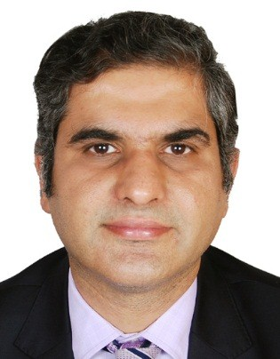 | Nikhil Sahni, Group President & Global Head, Multinational Corporate Banking, Govt. Banking & Strategic Government Advisory, YES BANKNikhil has over 18 years of experience in working across a diverse range of portfolios in banking and corporate strategy including Investment Banking, Wholesale Banking, Retail & Branch Banking, Strategy and Advisory. As a part of the bank’s Top Management, Nikhil leads YES BANK’s engagements with Multinational Organizations, Central and State Governments, and Embassies & Consulates to unify strengths and galvanize cross-functional synergies between key clients and core businesses of the bank. View Bio... |
THE FIFTH YEAR: UNDERCURRENTS IN PARTICIPATORY DEMOCRACY (1530-1700)
Discussion Framework:
72nd year since independence but we still haven’t been able to free ourselves from the clutches of biases and prejudices. Questioning should be an important pillar to participation but in India, tough and sometimes, the very basic questions are not even brought to the floor. The mood is such that people ask what “would” be asked and not what “should” be asked. Big, bombastic issues take up center stage even at mass debates while the real issues that bother Indians remain hidden simply because nobody wants to sound so “basic” and “self-centred”. In light of the above, the panel will throw light on the following points and discuss them.
- Dissent fuels any democracy. Then why are only popular opinions being talked about and heard? What are the barriers that act as deterrent in transforming the undercurrents and really vital issues into firing boardroom conversations?
- There is lot of ruing over lack of employment. But is it really lack of employment that mars the country’s growth or is lack of qualitative opportunities that is leading to larger problems like migration and even unrest towards the present situation?
- For a democracy to be participatory, it is vital that the citizens are informed accurately and not selectively. This one change alone can decide the popular public opinion and media, being the fourth pillar, has a huge role to play in this. However, there is a thin line between being a watchdog and being coercive. How far has the Indian media been able to strike this balance? How easy or difficult is it for media houses to scrape themselves off any alignment or judgment? And where does the responsibility lie? Who decides when the torchbearers have lost their way and are treading dangerous paths? Government, society or media barons?
- The enormous youth population is extremely heterogeneous with varied backgrounds, educational, social and economic and so very different perceptions. However, one trait that binds the majority of this population is their kaleidoscopic view of the world around and their reluctance to involve in global matters that “should” bother them but “don’t”. To make this democracy participatory, we need to bring in more involvement from this section of society. The task is challenging given the fact that the youth are driven by very specific issues that are mostly need-based and popular. So what strategies or waves need to be engineered to mobilize the mindsets of the youth population of the country in the coming elections, and make them actively participate?
Power Panel Discussion Moderated by
| 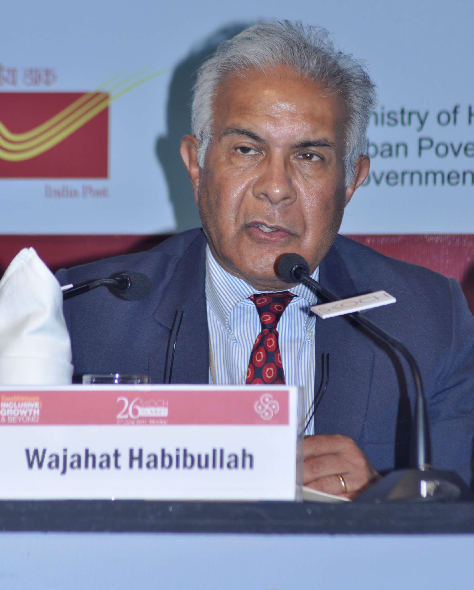 | Wajahat Habibullah, Ex-Chief Information Commissioner and Former Chairman, National Commission for MinoritiesWajahat Habibullah was the chairperson of the National Commission for Minorities. Prior to this, he held the position of the first Chief Information Commissioner of India. He was an officer of the Indian Administrative Service (IAS) from 1968 until his retirement in August 2005. He was also Secretary to the Government of India in the Ministry of Panchayati Raj (Local Government). View Bio... |
Navika Kumar, Managing Editor, Times NowNavika Kumar is widely regarded as the best investigative reporter in the contemporary India. She is currently working with Times Now, an English news channel. View Bio... |
| 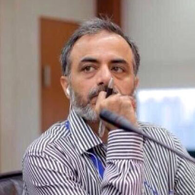 | Rajesh Kalra, Chief Editor, The Times InternetRajesh Kalra serves as Chief Editor of Times Internet Ltd. A journalist with two decades of experience, Mr Kalra last formal job was that of Editor, Times Online, in 1999. During that stint, he was instrumental in launching the three major online initiatives of the Group viz The Times of India, The Economic Times and Indiatimes. Prior to that, he was Editor - Special Reports with The Economic Times. He then ran his own Internet company for some time and managed dynamic content areas of websites such as Yahoo India, MSN India, Mantra Online and Narad Online. His specialisation is IT and Telecom and he has written extensively on the subject for several publications. View Bio... |
 |
Sankarshan Thakur, Editor, The TelegraphSankarshan Thakur was born in Patna in 1962 and went to school at St. Xavier’s, Patna and St. Xavier’s, Delhi. He earned a Bachelor’s degree in Political Science from Hindu College, Delhi University, in 1983. He began his journalistic career with SUNDAY magazine in 1984. He has been Associate Editor with The Telegraph and Indian Express. Before returning to The Telegraph for his second stint in 2009, he was Executive Editor of Tehelka. View Bio... |
| 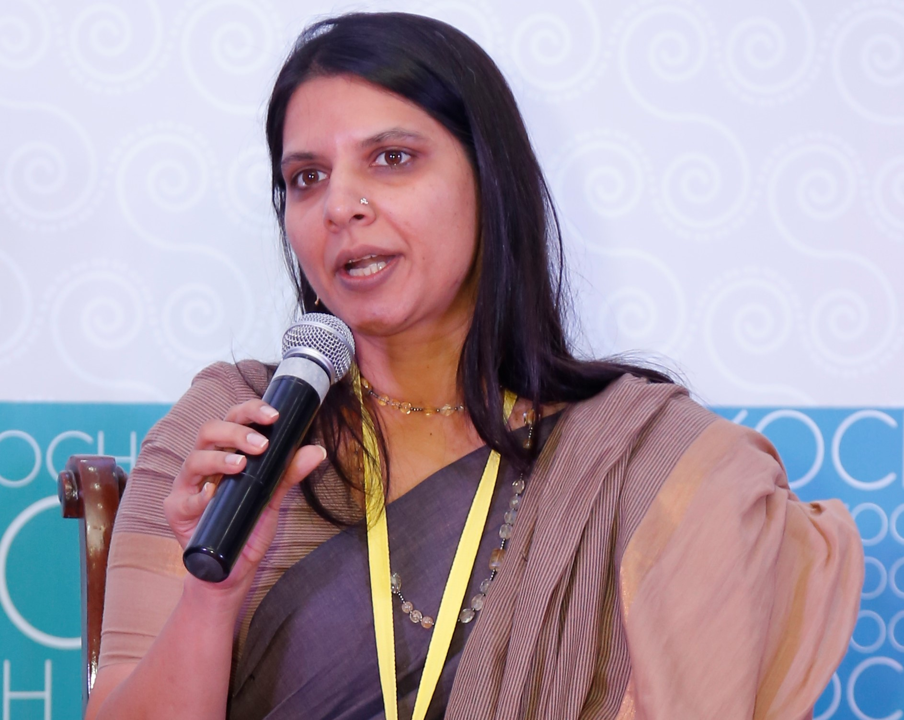 | Yamini Aiyar, President and Chief Executive, Centre for Policy ResearchYamini Aiyar is the President and Chief Executive of CPR. Her research interests are in the field of social policy and development. In 2008, Yamini founded the Accountability Initiative at CPR. Under her leadership, the Accountability Initiative has produced significant research in the areas of governance, state capacity and social policy. It pioneered a new approach to tracking public expenditures for social policy programs and is widely recognised for running the country’s largest expenditure-tracking survey in elementary education. Yamini’s own research on social accountability, elementary education, decentralisation and administrative reforms has received both academic and popular recognition. View Bio... |
| 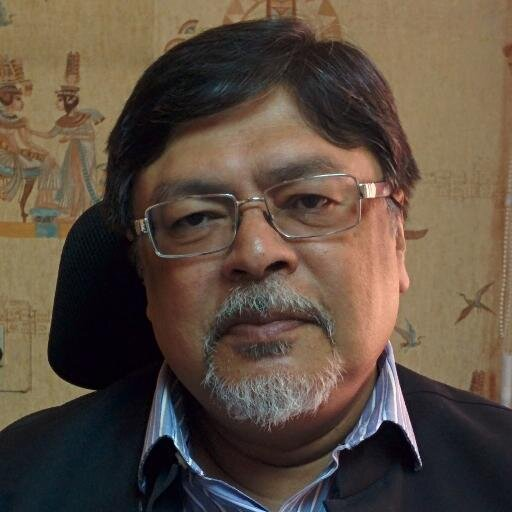 | Chandan Mitra, Editor & Managing Director, The PioneerChandan Mitra is an Indian journalist, presently editor and managing director of The Pioneer newspaper in Delhi, India. He was nominated as a member of the Rajya Sabha during August 2003 to August 2009. He was elected to another term in the Rajya Sabha, as a Bharatiya Janata Party MP from Madhya Pradesh, in June 2010. Mitra started in journalism as Assistant Editor with The Statesman in Kolkata before he moved to the Times of India in Delhi and then The Sunday Observer; he went on to become Editor of the paper, and later moved to the Hindustan Times as Executive Editor. Mitra left to join The Pioneer as Editor, and eventually bought control of the newspaper from the Thapar family in 1998 when industrialist L. M. Thapar decided to cut his losses. View Bio... |
DIALOGUE OF THE TITANS - SOCIAL MEDIA, ESPIONAGE, CYBER TERRORISM AND NATIONAL SECURITY (1830-2030)
Participants
| 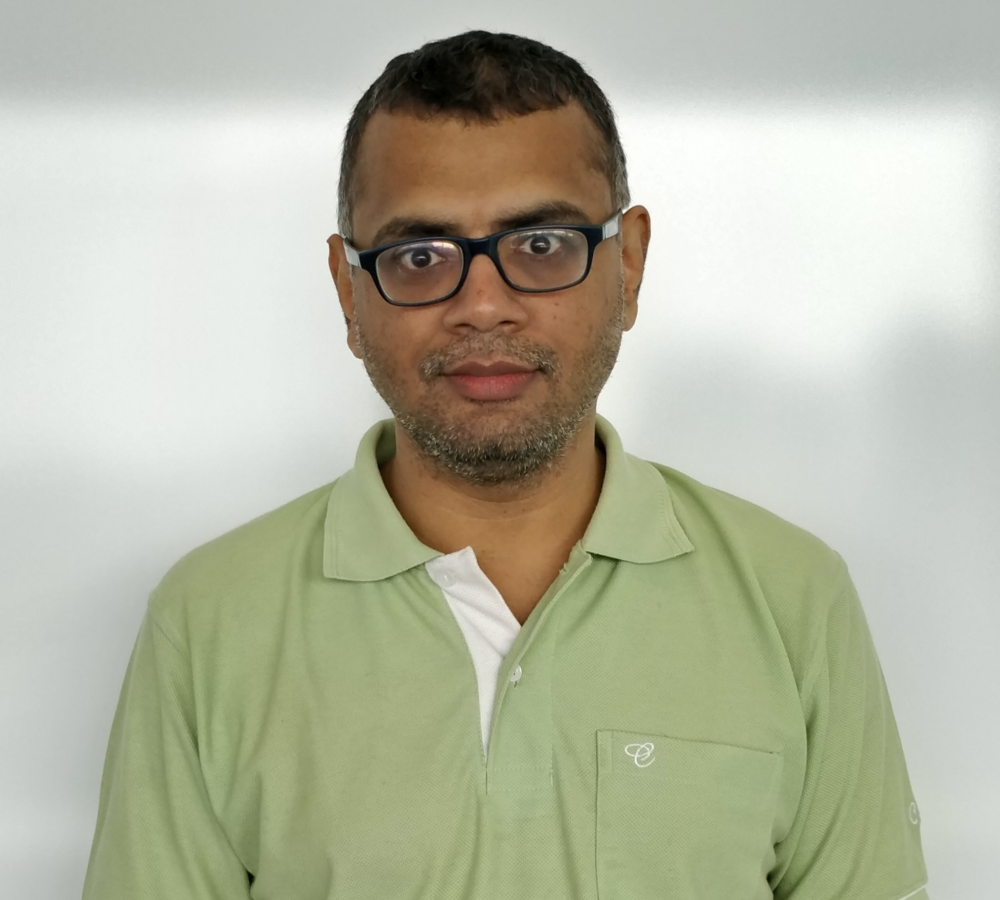 | Anand V, Security ResearcherAnand V is a Computer Science engineer with 20+ years of experience in the field of data security and has been a security researcher for last 4+ years. He was a deponent for the petitioners in the Aadhaar constitutional challenge, currently pending in the supreme court. View Bio |
| 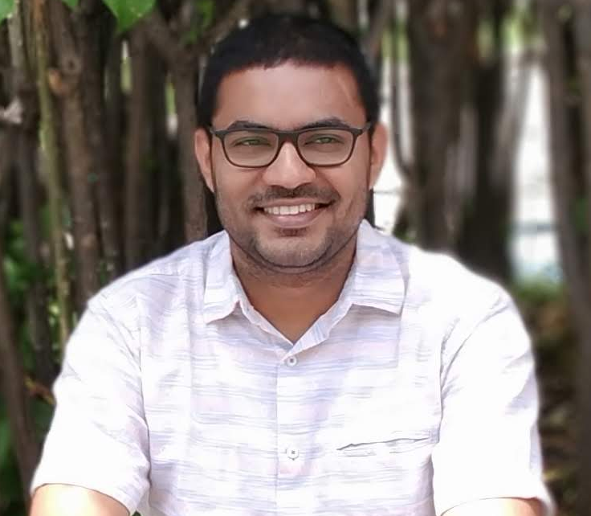 | Anivar Aravind, Founder Executive Director, Indic ProjectAnivar Aravind is Founder Executive Director of Indic Project, a civic-tech non-profit initiative works on language engineering, technology standards and digital rights of native language users. He is a software engineering executive, mentor and strategist with 12+ years progressive experience in mentoring many free and open source software projects and start-ups in social technology space to find their feet, assisting in various capacities. He currently works as Head of Products in Paisool, an E-commerce platform enabling Kirana stores. Anivar’s passion is in the intersection of technology, policy and law with from the perspective of human rights & software freedom. View Bio... |
| 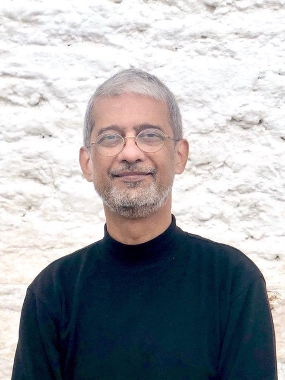 | Anupam Saraph, Professor, Symbiosis Institute of Computer Studies and ResearchAnupam Saraph serves as an Adjunct Professor at various universities and as an independent director on the boards of Public and Private Sector companies and NGOs. He has held CxO positions across public and private organisations and held ministerial rank in government. As a Professor of Systems, Governance and Decision Sciences, he has mentored students and taught systems, information systems, environmental systems and sustainable development at universities in Europe, Asia and the Americas. Dr Saraph has also had the unique distinction of being India’s only person who has held the only office of a City CIO in India, in a PPP arrangement with government, industry and himself. He has also been the first e-governance Advisor to a State government. View Bio |
Deepak B Phatak, Professor Emeritus, IIT-B, Mumbai & Director, SKOCH Development FoundationDeepak B Phatak is an Indian computer scientist and academic, and a recipient of the Padma Shri Award for his contribution in science and technology in 2013. He is known for his notable work for upgrading Aakash, advertised by its manufacturer as the 'world's cheapest tablet'. In 2009, he was ranked one of the 50 most powerful people in India. Phatak completed secondary school at Dayanand Arya Vidyalaya, graduated third in his class with a degree in electrical engineering from Shri Govindram Seksaria Institute of Technology and Science (SGSITS) Indore, completed his master of engineering (specialising in instrumentation, control and computers), and received his PhD in computer science from Indian Institute of Technology Bombay. View Bio |
| 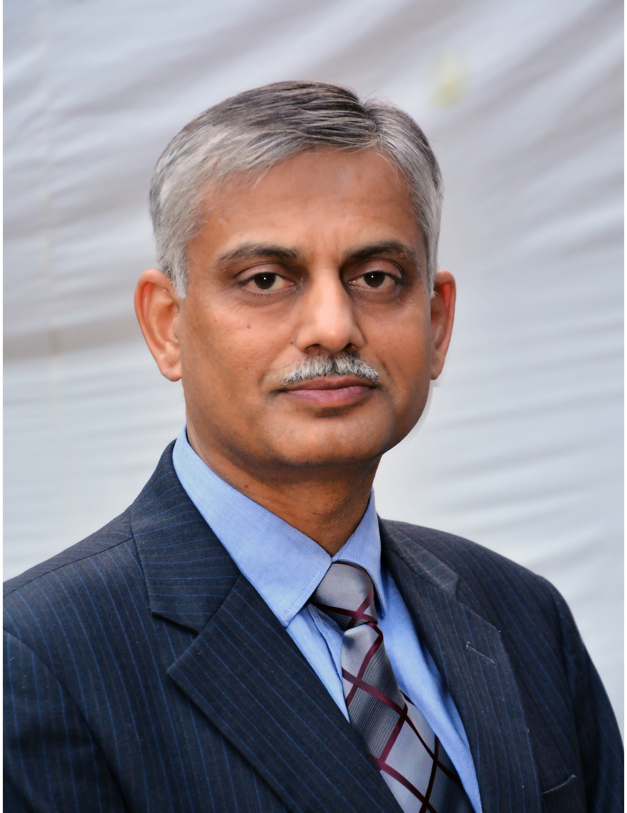 | Deepak Maheshwari, Director- Government Affairs, Symantec Software SolutionsDeepak Maheshwari heads government affairs across India, ASEAN and China in Symantec, the global leader in cybersecurity. With over two decades of experience as a public policy and regulatory affairs professional, he has a keen interest in the interplay of technological innovation and socio-economic development. An oft-invited speaker, his articles and quotes have been widely and frequently published. He has been closely associated with various industry and professional bodies. Currently, he is the Global Chair of the IEEE Internet Initiative and a member of the committee on Artificial Intelligence set up by the government of India. View Bio... |
| 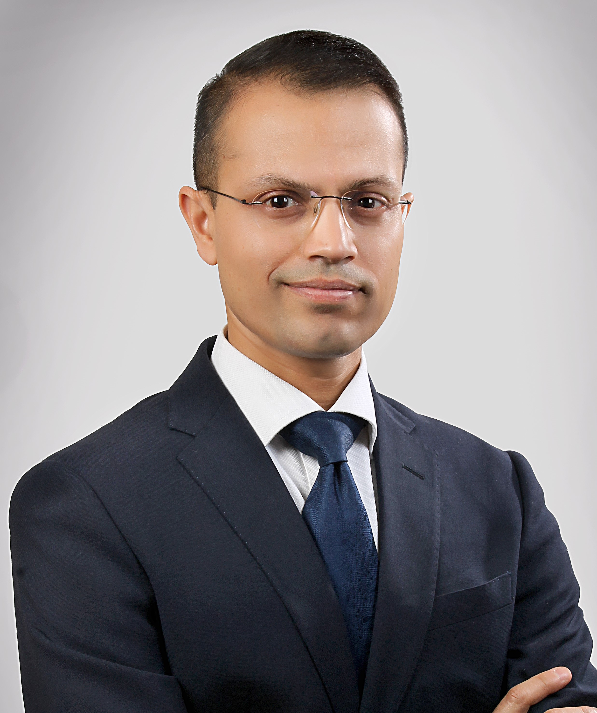 | Saikat Datta, South Asia Editor, Asia TimesSaikat Datta is the South Asia Editor for Asia Times in charge of coverage across India. Pakistan, Bangladesh & Sri Lanka. He is also a Strategic Advisor to NullCon, India’s biggest cybersecurity community. He was also a Policy Director with the Centre for Internet & Society, India till September 2018. He is an award-winning journalist with over 20 years as an editor and an investigative reporter with several news organisations. He has been a defence correspondent with The Indian Express, an assistant editor with the Outlook magazine, Resident Editor with DNA, member of the Editorial Board with Zee News and Editor (National Security) with Hindustan Times. View Bio... |
THE DIGITAL ESTATE (0930-1100)
Discussion Framework:
Digital India has been the cornerstone of Modi Government since 2014. The thrust on anything Digital or electronic has been unparalleled. This is meant to help improve India’s notoriously slow delivery systems and eliminate corruption. Government claims savings of upwards of 90000 crores on account of Aadhaar alone. At the same time civil society and independent expert voices have been advising caution. This panel examines the following issues:
- How has Indian policy making in ‘Digital’ performed thus far?
- How can policy making related to ‘Digital’ be strengthened?
- How to provide adequate protection for whistleblowers, aggrieved parties and put in place a reporting mechanism?
Anand V, Security ResearcherAnand V is a Computer Science engineer with 20+ years of experience in the field of data security and has been a security researcher for last 4+ years. He was a deponent for the petitioners in the Aadhaar constitutional challenge, currently pending in the supreme court. View Bio |
Rohan Mishra, Director - Public Policy, South Asia, MastercardView Bio |
| 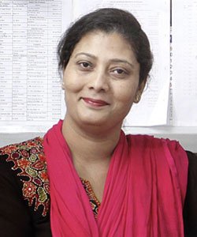 | Rachna Khaira, Journalist, HuffPost IndiaRachna Khaira is a journalist at HuffPost India. Married to a former army officer in the Indian army, the journalist was exposed to pan India reporting experience in states including New Delhi, Rajasthan, Karnataka. She started her career with Asian News International (ANI) as a TV journalist at New Delhi and later went ahead to work with national English dailies including Times of India and the Indian Express at Chandigarh. View Bio... |
Anivar Aravind, Founder Executive Director, Indic ProjectAnivar Aravind is Founder Executive Director of Indic Project, a civic-tech non-profit initiative works on language engineering, technology standards and digital rights of native language users. He is a software engineering executive, mentor and strategist with 12+ years progressive experience in mentoring many free and open source software projects and start-ups in social technology space to find their feet, assisting in various capacities. He currently works as Head of Products in Paisool, an E-commerce platform enabling Kirana stores. Anivar’s passion is in the intersection of technology, policy and law with from the perspective of human rights & software freedom. View Bio... |
Deepak Maheshwari, Director- Government Affairs, Symantec Software SolutionsDeepak Maheshwari heads government affairs across India, ASEAN and China in Symantec, the global leader in cybersecurity. With over two decades of experience as a public policy and regulatory affairs professional, he has a keen interest in the interplay of technological innovation and socio-economic development. An oft-invited speaker, his articles and quotes have been widely and frequently published. He has been closely associated with various industry and professional bodies. Currently, he is the Global Chair of the IEEE Internet Initiative and a member of the committee on Artificial Intelligence set up by the government of India. View Bio... |
Saikat Datta, South Asia Editor, Asia TimesSaikat Datta is the South Asia Editor for Asia Times in charge of coverage across India. Pakistan, Bangladesh & Sri Lanka. He is also a Strategic Advisor to NullCon, India’s biggest cybersecurity community. He was also a Policy Director with the Centre for Internet & Society, India till September 2018. He is an award-winning journalist with over 20 years as an editor and an investigative reporter with several news organisations. He has been a defence correspondent with The Indian Express, an assistant editor with the Outlook magazine, Resident Editor with DNA, member of the Editorial Board with Zee News and Editor (National Security) with Hindustan Times. View Bio... |
| 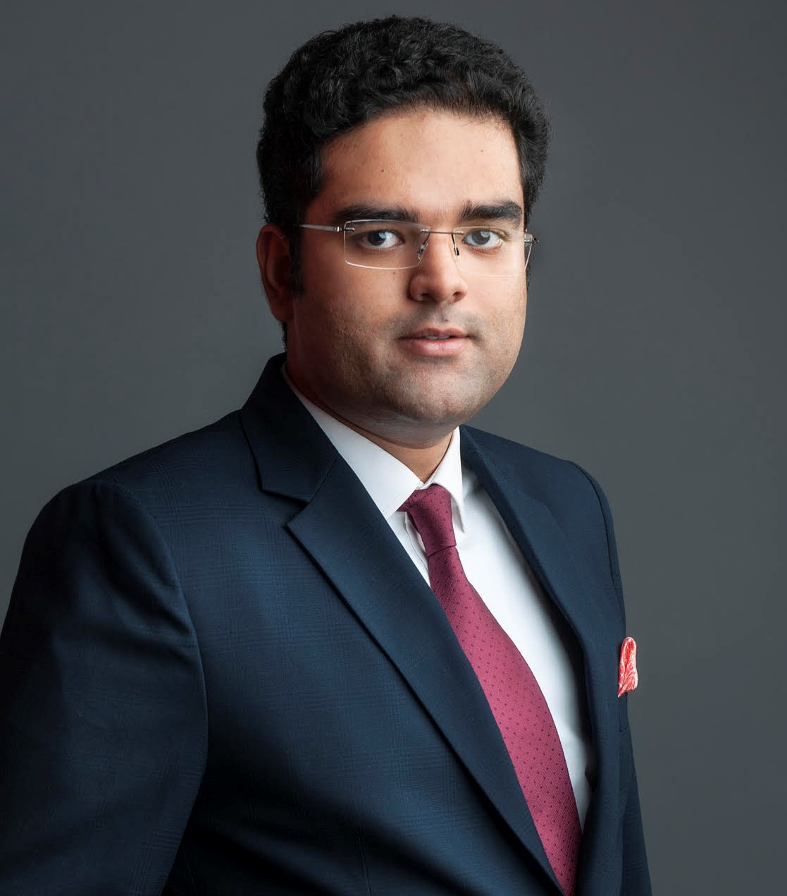 | Sidhant Kumar Marwah, Author, PRIVACY LAW - Principles, Injunctions and CompensationSidhant Kumar is an advocate based in Delhi engaged in commercial and regulatory litigation along with arbitration. Sidhant is also focussed on technology regulatory matters such as data protection, telecom and internet governance. His writings on these issues have been published extensively including a book on privacy law that was cited by the Supreme Court of India in 2017. Sidhant has extensive relationships with leading senior advocates and law firms with the ability to collaborate on large matters. View Bio... |
Sanjay Jaju, Joint Secretary (DIP), Ministry of DefenceSanjay comes from Indian Administrative Service and is presently working on central deputation as Joint Secretary in the Department of Defence Production in the Ministry of Defence in the Government of India. Sanjay is a Post Graduate Mechanical Engineer and a Cost & Management Accountant by background and has recently completed MBA in Finance. He has worked in diverse areas like Urban, Infrastructure, Civil Supplies, Education & Tribal Welfare. One strand common across these jobs has been his passion for Information Technology. He has been an ardent advocate of Information Technology for Development and Governance. View Bio... |
IS DE-GLOBALISATION THE NEW WORLD ORDER? (1130-1300)
Discussion Framework:
Globalisation and opening up of Indian economy since 1991 has delivered rich dividends. The country historically caught-up in a 5% growth trap due to License-Permit Raj came of age and reported high single-digit or even double-digit growth post opening up of the economy. This lifted more than 200 million Indians out of poverty. With President Trump at the helm in the US promoting an America First policy, the world braces itself for another trade war. A war that should logically be an America vs China battle due to a hugely lopsided balance of trade, India too seems to have willy-nilly wandered into this mine-field through its recent policy directions on Data Localization, e-Commerce and Privacy. Perception is that these directly and adversely impact global service providers in India through non-trade barriers. The proponents of such moves believe that it will generate jobs, protect Indian industry and be good for the economy if an India First policy is pursued across sectors. While industry offers death of innovation argument, this panel seeks answers to the difficult questions:
- Is inward looking policy on services a prudent policy?
- Should e-commerce be micromanaged?
- What is the likely impact of de-globalisation approach to Indian economy and regulation?
- How do you balance India’s need for FDI and the imperatives to raise barriers?
Keynote:
Manish Tewari, National Spokesperson, Indian National CongressManish Tewari is a practising Lawyer in the Supreme Court of India. He was a Member of the Indian Parliament (Lok Sabha). He was Former Federal Minister of Information & Broadcasting in the Government of India. Besides he was also a Member/Special Invitee to the Cabinet Committee on Economic Affairs, Cabinet Committee on Parliamentary Affairs and Cabinet Committee on Investments etc. He was also a Member of numerous Empowered Group of Ministers (EGoM) and Group of Ministers dealing with a diverse array of policy issues. He is the National Spokesperson of the Indian National Congress. He was a Member of the Parliamentary Standing Committees of External Affairs, Law & Justice and Defence. He also served on the Parliamentary Consultative Committees of the Ministries of Defence and Law & Justice. View Bio... |
Ashwini Mahajan, National Co-Convenor, Swadeshi Jagran ManchDr. Ashwani Mahajan, Associate Professor, Department of Economics PGDAV College is a known name in the field of economics, as author, columnist, speaker and policy interventionist. He has been instrumental in getting changes in economic policies, by virtue of his in depth study of economic issues faced by the nation. His successful policy interventions include withdrawal of controversial ordinance on land acquisition, getting field trials of GM crops policy revisited, FDI policy of the government especially retail trade, e-commerce etc. He has been guiding the government on the matters of public policy and also the Foreign Trade Policy. As a researcher and activist on WTO and other international trade agreements, he has attended three ministerial conferences of WTO held at Geneva, Bali and Nairobi. View Bio |
| 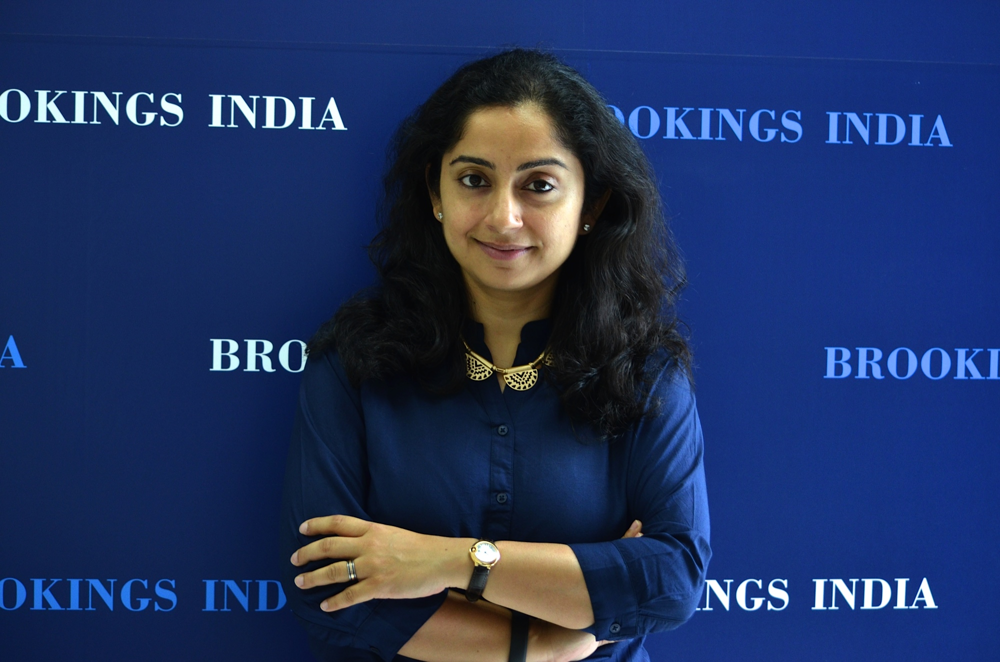 | Shamika Ravi, Part-time Member, Economic Advisory Council to the Prime Minister of India & Director, Research, Brookings IndiaDr Shamika Ravi is Director of Research at Brookings India and a Senior Fellow of Governance Studies Program, at Brookings India and Brookings Institution Washington D.C. She is also Member of the Economic Advisory Council to the Prime Minister of India. She leads the Development Economics research vertical at Brookings India, where the focus is on financial inclusion, health, gender inequality and urbanisation. View Bio |
| 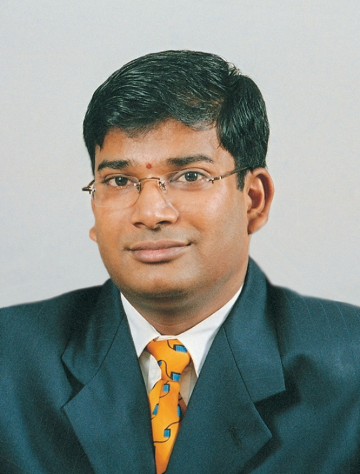 | Sivarama Krishnan, Leader, Cyber Security, PwCSivarama Krishnan leads the Cybersecurity Practice at PwC India, one of the fastest growing practices within the Firm and a market leader in the space. He has over 25 years of global experience across diverse sectors including the Government, BFSI, FMCG, energy, oil and gas, metals and mining, infrastructure, healthcare, etc., driving end to end strategy through execution capabilities of a 600 member team., apart from being a part of several industries initiatives carried out by industry bodies such as ASSOCHAM, NASSCOM, DSCI, etc. View Bio |
| 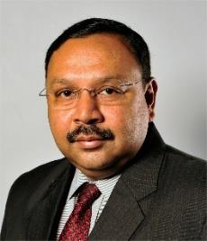 | Tanmoy Chakrabarty, Group Government Affairs Officer, Tata SonsTanmoy Chakrabarty – Group Government Affairs Officer at Tata Sons Limited. He has started this new assignment on April 01, 2018. Here his role is to synergize the Tata Group Company initiatives to Governments and to develop a “One Tata” approach to the Government Sector. He will operate from the Delhi Office of Tata Sons Limited. Tata Sons Limited is the Group Parent Company that has over 100 subsidiary Tata Companies and is the largest Industry Group in India which has been in existence in India for 150 years. View Bio |
MAKING DATA PROTECTION A REALITY (1400-1530)
Discussion Framework:
2017-18 saw data protection and privacy at the heart of the most heated courtroom battle in the Supreme Court. While privacy has been declared a fundamental right, judgement on Aadhaar is reserved. After a year of research, the Srikrishna Committee submitted its report to the Ministry of Electronics & Information Technology along with a legislation draft on data protection titled, “The Personal Data Protection Bill, 2018”, which is yet to be passed in the parliament. While, there was criticism of the Committee for being opaque and not including civil society in discussions, quite a few of its recommendations have found acceptance while others are being hotly contested. This panel examines the following issues:
- Given the overarching scope of data protection, is there a need for a central data protection authority (DPA) as well as sectoral regulators?
- Is it advisable to create criminal liability for data breaches and give judicial powers to DPA and sectoral regulators?
- Should the government be exempt from data protection liabilities?
- What will be the impact of cost of the compliance on business and functionality?
Power Panel Discussion Moderated by
Deepak B Phatak, Professor Emeritus, IIT-B, Mumbai & Director, SKOCH Development FoundationDeepak B Phatak is an Indian computer scientist and academic, and a recipient of the Padma Shri Award for his contribution in science and technology in 2013. He is known for his notable work for upgrading Aakash, advertised by its manufacturer as the 'world's cheapest tablet'. In 2009, he was ranked one of the 50 most powerful people in India. Phatak completed secondary school at Dayanand Arya Vidyalaya, graduated third in his class with a degree in electrical engineering from Shri Govindram Seksaria Institute of Technology and Science (SGSITS) Indore, completed his master of engineering (specialising in instrumentation, control and computers), and received his PhD in computer science from Indian Institute of Technology Bombay. View Bio |
Anupam Saraph, Professor, Symbiosis Institute of Computer Studies and ResearchAnupam Saraph serves as an Adjunct Professor at various universities and as an independent director on the boards of Public and Private Sector companies and NGOs. He has held CxO positions across public and private organisations and held ministerial rank in government. As a Professor of Systems, Governance and Decision Sciences, he has mentored students and taught systems, information systems, environmental systems and sustainable development at universities in Europe, Asia and the Americas. Dr Saraph has also had the unique distinction of being India’s only person who has held the only office of a City CIO in India, in a PPP arrangement with government, industry and himself. He has also been the first e-governance Advisor to a State government. View Bio |
| 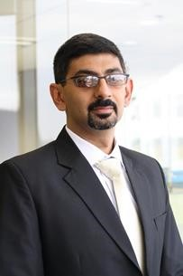 | Gautam Kapoor, Partner, DeloitteGautum Kapoor is the Partner, Risk Advisory / Cyber Risk Services in India and has more than 17 years of Industry/ Consulting Experience in the field of Cyber Security/ Information Security/Data protection and Information Risk Management. Gautam is a Mechanical Engineer and MBA (Information Management) and holds international certifications as CISSP, CRISC, CISA and ISO 27001 LI. Gautum has multi-geographic experience and has worked on multiple projects in India, Singapore, China, Malaysia, Hong Kong, Thailand, Philippines and South Korea. His specific focus areas include Cyber Security (especially in cards, payment processes, ATM, SWIFT), Information Security Strategy, PCI DSS, PKI, Encryption technologies such as BlockChain, Policies and Process implementation, Enterprise Security Architecture, Secure Identity and Access Management, IT Risk Management, IT Security Operations, Vulnerability management Data Privacy and Data leakage. View Bio |
| 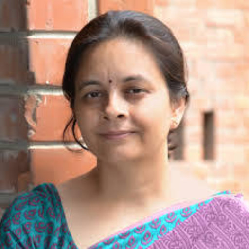 | Anjali Kaushik, Professor, Information Management, Management Development InstituteAnjali Kaushik is a Professor at Management Development Institute (MDI), Gurgaon which is one of the Top Business Schools in India. She has worked as a consultant on various projects related to strategic planning, policy making in e-governance and cyber security with Government of India. She has authored five books with renowned publishers and has published more than 30 papers in peer-reviewed international journals. She belongs to the first batch of Lady Officers in Indian Air Force and is a Chevening-Oxford Scholar. She is an MBA from MDI, Gurgaon, and Ph.D. from Delhi University. View Bio |
| 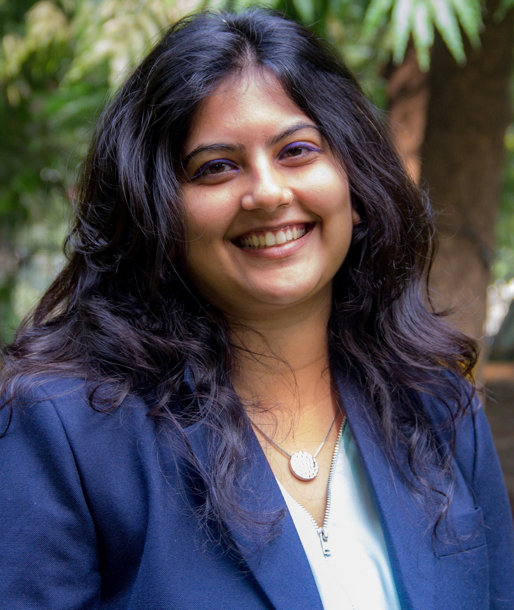 | Nehaa Chaudhari, Public Policy Lead, Ikigai LawNehaa Chaudhari heads the public policy practice at Ikigai Law, and has done substantial work in the field of technology regulation. Nehaa advises diverse stakeholders including technology companies and think-tanks on formulating and communicating policy positions. She has authored several pieces of academic writing, and her opinion pieces regularly appear in leading national dailies and media platforms. Earlier, she has been a visiting faculty member at National Law University Delhi and has worked with the Berkman Klein Center for Internet and Society at Harvard University, and the Centre for Internet and Society, India. View Bio |
Rahul Aggarwal, Partner, PwCRahul leads the cybersecurity practice for the Government and Public Sector Undertaking (PSU) sectors in India. He encompasses more than 18 years of extensive experience in Cyber Security, Risk Management, ISO 27001 implementation and certification, data privacy, Public Key Infrastructure (PKI), data protection and privacy, IT Governance and Compliance, program management among others. Rahul has worked with Government and PSU clients in multiple countries such as Bangladesh, Bahrain, Dubai, Kingdom of Saudi Arabia (KSA), UK, USA, Kazakhstan etc. on IT governance and security-related work. View Bio |
Anand V, Security ResearcherAnand V is a Computer Science engineer with 20+ years of experience in the field of data security and has been a security researcher for last 4+ years. He was a deponent for the petitioners in the Aadhaar constitutional challenge, currently pending in the supreme court. View Bio |
Vidur Gupta, Partner - Cyber Security, E&YMr Vidur Gupta is a Practice lead and P/L owner with widespread experience in Big4 consulting firms; Expertise in business development and people management, extensive IT Advisory experience including Cyber Security, IT Risk Assurance, Data Privacy & Information Security Advisory, Business Continuity Advisory & Business Systems Controls Review Assistance; Knowledge of working in multiple geographies and countries for national and multinational clients representing diverse industry segments. Currently leading the practice along with owning P/L responsibility for Government Advisory in areas like Cyber Security & Threat Management Design and Monitoring, Information Security Strategy & Roadmap, Cyber Security Architecture & Implementation, Data Privacy and Information Security Governance, Business Continuity and Resilience, Third Party Information Security Audits, etc. View Bio |
HACKERS AT THE GATE (1530-1700)
Discussion Framework:
Having embraced a digital-first policy, practically everyone in India is busy collecting data on everyone else. Large centralised depositories in areas like identity and elsewhere may act like a honeypot for cyber-attacks. These can be conducted at the fraction of a cost of conventional warfare, subversion or crime. Cross-linking of databases and no-alternative to digital services provisioning makes the idea of a cyber black-out very attractive and potentially devastating. 90% of the total amount of data available has been collected in the past two years due to digitisation and has made us more vulnerable to such attacks. The issues that this panel examines:
- What does the world order on cyber security look like? Opportunities and challenges for India
- Do we have a Cybersecurity doctrine? Should we have laws and implementation agencies supporting this?
- How does our defence as well as homeland security technical capability be kept up to speed with that of the
hackers? Where will the people come from?
Power Panel Discussion Moderated by
Deepak B Phatak, Professor Emeritus, IIT-B, Mumbai & Director, SKOCH Development FoundationDeepak B Phatak is an Indian computer scientist and academic, and a recipient of the Padma Shri Award for his contribution in science and technology in 2013. He is known for his notable work for upgrading Aakash, advertised by its manufacturer as the 'world's cheapest tablet'. In 2009, he was ranked one of the 50 most powerful people in India. Phatak completed secondary school at Dayanand Arya Vidyalaya, graduated third in his class with a degree in electrical engineering from Shri Govindram Seksaria Institute of Technology and Science (SGSITS) Indore, completed his master of engineering (specialising in instrumentation, control and computers), and received his PhD in computer science from Indian Institute of Technology Bombay. View Bio |
Gautam Pande, Director, Enterprise Security Solutions, MastercardGautam leads the Enterprise Security Solutions products for South Asia in Mastercard. He has 12+ years of experience in managing consumer products across issuance &acceptance business. In his current role, Gautam works with Issuers, Acquirers, Merchants and Payment Facilitators on range of authentication & security decision products. He is passionate about securing & simplifying the payment experience for consumers across all channels. View Bio |
| 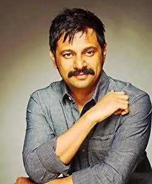 | Brijesh B Singh, Inspector General of Police (Cyber) and CISO, MaharashtraBrijesh Singh is head of Maharashtra Cyber, a unit looking after Cybersecurity of Government of Maharashtra. He is leading the implementation of MH Cyber Project, CERT MH and Predictive Policing units. He is also implementing a unique project of Automated Multi-Modal Biometric Identification System (AMBIS), which is the first initiative in India, where IRIS, Face recognition, Finger and Palm prints will be used for identification of criminals. Previously, he has implemented huge and successful projects like Crime and Criminal Tracking Network & System (CCTNS) project, other IT schemes for Policing. Presently he is also heading the CCTNS Task force developing big data solutions and analytics on crime data. View Bio |
| 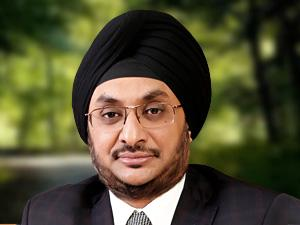 | Harsh Marwah, Country Manager, Check Point Software TechnologiesHarsh Marwah is the Country Manager at CheckPoint Software Technologies Ltd. In his role, Harsh is responsible for India Business for the company.Harsh has more than 25 years of IT&T experience and is an Industry veteran with strong business and technology background. Harsh has significant experience in setting-up and scaling companies with strong entrepreneurial background. He has managed large teams across functional groups and is a respected leader. View Bio |
| 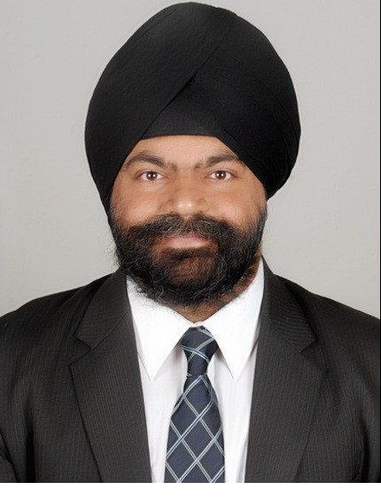 | Jaspreet Singh, Partner – Cyber Security, Africa, India & Middle East (AIM), E&YMr Jaspreet Singh is an experienced practice leader of Cyber Security for North India. His advisory experience covers engagements in Telecom, IT/ITES, E-commerce, Large Captives, Consumer and industrial markets and Infrastructure sector. He also posses a vast expertise in GDPR, Data Privacy, IT Strategy, IT Program Management, IT Architecture, Vulnerability Assessment and Penetration Testing, Spear Phishing, Cloud Security, SIEM, PIM/ PAM, Network Security, Project Risk Reviews, IT Security and Governance, Risk Assessment and Management, Business Continuity Planning and Crisis Management. View Bio |
Mathan Babu Kasilingam, CISO, National Payments Corporation of IndiaMathan is the Chief Information Security Officer of NPCI who has over 16 years of experience in the field of Information and Cyber Security. Mathan joins from HDFC Bank where he was the Head of Cyber Security Solutions and Operations for about 3 years. He was instrumental in building a robust Cyber Security defence and response mechanism for the bank. The role focuses on the Security Technologies & Solution Management as an IT practice in the IT Group. Mathan has held various positions in the field of Information and Cyber Security across multiple leading firms. View Bio |
| 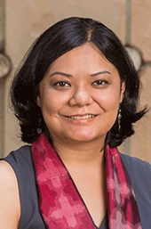 | Smriti Parsheera, Consultant, National Institute of Public Finance and PolicySmriti Parsheera is a lawyer and policy researcher with the National Institute of Public Finance and Policy in New Delhi, where she leads the telecom and technology policy team. Her other work has spanned across the areas of competition policy, consumer protection, regulatory governance and financial sector reforms. Smriti has also held research positions with the United Nations Development Programme and the Competition Commission of India. Before moving to the field of public policy, she worked with the M&A practice group of a commercial law firm in Delhi. Smriti graduated from the National Law School of India University, Bangalore and holds a Master in Law degree from the University of Pennsylvania. She has also completed a certificate course in law and business from the Wharton School, University of Pennsylvania. View Bio |